La Liga Árabe adopta las primeras sanciones económicas contra Siria
Sun, 27 Nov 2011 08:15:00 +0100
Siria se queda cada vez más sola y encerrada. Las sanciones aprobadas hoy por la Liga Árabe constituyen un castigo al régimen del presidente Bachar el Asad, pero afectarán a todo el país y pueden agravar a corto plazo el sangriento conflicto iniciado en marzo. El Gobierno sirio habla de traición y, por el momento, se muestra dispuesto a seguir utilizando al Ejército para sofocar la revuelta contra El Asad, que atribuye a una conspiración extranjera. Las sanciones se aplicarán de forma inmediata e incluyen la suspensión de transacciones con el Banco Central sirio.
Rajoy: "No es el momento para fiestas. España no está para eso"
Sat, 26 Nov 2011 06:36:00 +0100
Debe de ser muy duro esperar 30 años la noche soñada, y no poder disfrutarla cuando llega. O al menos, no poder demostrar que la disfrutas. Mariano Rajoy, un hombre que conoce como pocos el sabor de la derrota, vive desde el domingo el vértigo de la victoria en plena tormenta financiera. De poco sirve el resultado extraordinario: los mercados no dan tregua, y aunque él está intentando desaparecer del ojo público para no quemarse, incluso en su entorno coinciden: la crisis ya ha empezado a cebarse también con Rajoy antes incluso de que tome posesión. En la primera semana de la nueva era, la bolsa ha perdido un 6,67% y la prima de riesgo sigue descontrolada.
A la búsqueda de un líder socialista que no esté quemado
Sat, 26 Nov 2011 08:08:00 +0100
No hay unanimidad entre los expertos en élites políticas a la hora de aventurar si la doble derrota sufrida por el PSOE en el horrible año 2011 provocará una renovación de sus dirigentes. Tampoco concluyen si la enorme pérdida de efectivos experimentada (concejales, parlamentarios y altos cargos) limitará su capacidad de influencia y dejará lastimadas sus redes internas y externas. El PSOE se ha convertido en un caso digno de estudio. ¿Habrá catarsis tras la derrota o una bunkerización de los mandos? Lo que está claro es que el resultado ha sido tan severo que la oficina de colocación del PSOE amenaza cierre.
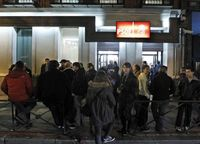
El Baradei y Musa niegan su apoyo a la Junta militar egipcia
Sat, 26 Nov 2011 05:55:00 +0100
El mariscal Mohamed Tantaui, jefe de la Junta militar, no encuentra salida a la crisis egipcia. Este sábado se reunió con Mohamed el Baradei y Amro Musa, futuros candidatos presidenciales y hombres de prestigio entre los revolucionarios, para recabar su apoyo. Ambos se lo negaron y le exigieron que se fuera, como demanda una parte del país. Otra parte, sin embargo, teme que sin el Ejército se abra un vacío de poder. Con la sociedad dividida y a un día del inicio de las elecciones, miles de personas siguen ocupando la plaza cairota de Tahrir, cerca de la cual un joven manifestante se sumó por la mañana a la larga lista de muertos por la policía, 41 en una semana según el recuento oficial.
Pakistán da a EE UU 15 días de plazo para desalojar una base aérea
Sat, 26 Nov 2011 08:48:00 +0100
El que está resultando el año más negro para las relaciones entre Estados Unidos y Pakistán ha añadido otra cuenta al rosario de desconfianzas mutuas con la muerte de 28 soldados paquistaníes en un ataque de helicópteros de la OTAN a un puesto fronterizo entre Pakistán y Afganistán.

Expediente a los padres de la niña del 'burka' por abandono escolar
Sun, 27 Nov 2011 07:00:00 +0100
Chadia, de 15 años, abandonó el pasado curso sus estudios en el instituto Rusadir de Melilla porque no le permitieron acudir vestida con su burka negro y guantes hasta el codo. Prometió que volvería al colegio y que se matricularía este curso, pero no lo ha hecho. La Fiscalía de Menores de esa ciudad acaba de iniciar un expediente contra sus padres por abandono escolar, según aseguran fuentes judiciales.
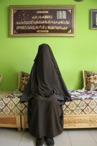
Mi padre era verdugo
Sun, 27 Nov 2011 07:00:00 +0100
Con una bufanda al cuello, un sombrero que ganó bailando tango, chaquetilla ajustada, Cándido López se pasea por el barrio de Malasaña de Madrid con las manos en los bolsillos. Se para en esta taberna donde se juega al tute, en esta de aspecto añejo y en la otra de más allá. Dice que esta noche hay que hablarlo todo, en caso de que haya que hacerlo, porque de madrugada se irá a dormir a una pensión del centro de la ciudad y sabe Dios cuándo se despertará. Su existencia está marcada por el oscuro oficio de su padre, el último hombre que ejerció de verdugo en España. Ese hombre se llamaba Antonio López Sierra y en un maletín guardaba el garrote vil con el que ajustició a 17 reos. Pero esta historia no cuenta la vida del verdugo, ni la de sus años en prisión por el atraco a una gasolinera, pues ya se han escrito mucho sobre eso; sino más bien sobre el niño, su hijo, el que le veía irse de casa tras recibir un telegrama, cualquier día, a cualquiera hora, y le recibía al día siguiente cuando desprendía todavía un fuerte olor a coñac.
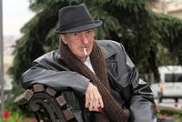
La increíble vuelta de la peseta
Sat, 26 Nov 2011 10:54:00 +0100
Despertador. Ducha rápida. Primer café en el bar de abajo.
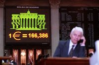
La ONU busca salida en Durban al fracaso de las cumbres del clima
Sun, 27 Nov 2011 07:00:00 +0100
La cumbre del clima que comienza mañana en Durban (Sudáfrica) tiene un objetivo menor (al menos si se tiene en cuenta la tarea de fondo de esta negociación, que es reformar el sistema energético mundial): negociar cómo mantener con vida el Protocolo de Kioto hasta 2020.
La crisis reactiva y abarata el alquiler de vivienda en España
Fri, 25 Nov 2011 17:58:00 +0100
La crisis empuja hacia la normalización del alquiler que va en aumento: hay alrededor de un millón más de viviendas en España que hace diez años, según el economista Julio Rodríguez. "La necesidad de recursos adicionales lleva a que los que tienen una segunda vivienda cercana se vayan a vivir a ella para alquilar la primera. Los promotores y los particulares, como los inversores que reformaban para vender, se ven abocados al arrendamiento", explica Alex Vázquez, director de alquiler residencial de Forcadell.
El Hierro elimina los planes de protección para la población
Fri, 25 Nov 2011 18:44:00 +0100
La normalidad vuelve -de momento- a El Hierro. La estabilidad del fenómeno sísmico-volcánico ha permitido que el Plan de Emergencias Volcánicas de Canarias (Pevolca) dictamine que se pueden suspender las medidas tomadas hasta ahora. Estas afectaban a una decenas de personas del norte, que llevaban desalojadas desde principios de noviembre, y a la reapertura de las carreteras que quedaban cerradas, así como a la posibilidad de usar el túnel de Los Roquillos las 24 horas del día.

Webber se impone
Sun, 27 Nov 2011 18:58:00 +0100
La amenaza de la lluvia sobrevoló por el circuito de Interlagos durante toda la carrera del Gran Premio de Brasil. Sin embargo, no apareció. La última carrera del curso tuvo un desarrollo lógico, sin grandes incidencias, sin accidentes que pudieran perjudicar a los líderes y dieran opciones a los aspirantes. Nada. Pero hubo una circunstancia que cambió el rumbo habitual de los acontecimientos en este Mundial de fórmula 1: el ganador fue el australiano Mark Webber y no Sebastian Vettel como venía ocurriendo. Y la causa fue que el alemán, ya doble campeón mundial, bajó su ritmo porque su equipo le indicó que tenía problemas con la segunda velocidad y que debía utilizar esta marcha lo menos posible.
Íñigo Martínez revienta Heliópolis
Sun, 27 Nov 2011 14:13:00 +0100
En un final de infarto, una obra de arte de Íñigo Martínez en el minuto 92 propició el triunfo de la Real Sociedad ante un Betis que fue capaz de igualar un 0-2 en contra con todo perdido. El golazo de Íñigo Martínez, que reventó Heliópolis con un zurdazo desde su propio campo, no es el primero que anota de esta forma el central del conjunto donostiarra. Ya en el clásico vasco, en Anoeta, el defensa anotó otro tanto de la misma manera, de un disparo tan lejano como preciso. Entonces, el gol no le sirvió de mucho a su equipo (ganó el Athletic por 1-2). En Sevilla, valió un triunfo cuando la Real daba por bueno el empate y el Betis, lleno de emoción, desbocado, no supo entender la valía de la igualada. Cayó por el pelotazo sublime de Íñigo Martínez, pero también por su obsesión de morir en el área de la Real, con cuatro delanteros, sin saborear lo importante que hubiera sido un punto. El golazo fue el punto y final a un partido enloquecido, de dominio alterno, donde el orden de la Real pudo más que este Betis sin control, sin freno, que ha entrado en barrena. Respira la Real y golpe durísimo para el Betis.

Un partido en una jugada
Sat, 26 Nov 2011 22:17:00 +0100
No fue el Madrid de los últimos tiempos, ese equipo que al primer parpadeo manda a la lona al adversario. Esta vez un lance le abrió el camino cuando el Atlético apretaba en un derbi más que en los últimos 12 años. Logró enredar al Madrid durante 25 minutos e incluso ponerse en ventaja. Hasta que Courtois se cruzó en el camino de Benzema. El meta fue expulsado y Cristiano embocó el penalti. Lo demás fue una quimera para los rojiblancos.
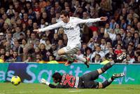
El Liverpool ya está maduro
Sun, 27 Nov 2011 19:21:00 +0100
Al Liverpool la Premier le resulta hoy en día demasiado larga, sobre todo porque le falta profundidad de armario y porque llega de unos años de flaqueza, con más debilidades que otra cosa, crisis de identidad. Pero es un equipo maduro, con galones y futbolistas efervescentes, que puede poner en entredicho a cualquiera, incluso a los más grandes, como el Chelsea, al que batió el fin de semana anterior, y al Manchester City, el líder al que le empató y no le hizo más daño de milagro, el que realizó Hart con las paradas a última hora. Duelo intenso en Anfield donde se enfrentaron dos estilos de juego, el fútbol de toda la vida de Inglaterra y el de la nueva generación, el que corresponde a los quilates y el que se impone con un goteo incesante. Se quedó en tablas, que no en agua de borrajas.
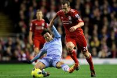
Sofocón del Barcelona ante el Obradoiro
Sun, 27 Nov 2011 15:13:00 +0100
Hubo un momento a catorce minutos del final en el que el Barcelona, doce abajo en el marcador (59-47) sintió que se había metido en una emboscada sin salida, en el que percibió que podía dejarse el liderato de la ACB en su visita a la cancha de Fontes do Sar, feudo de un equipo recién ascendido, en puestos de descenso, pero con alma irreductible y una historia forjada a base de pelear imposibles. Es ante los desafíos hercúleos cuando el Obradoiro ofrece lo mejor. Había llegado al partido entre dudas, con rumores de movimiento en la plantilla después de cinco derrotas consecutivas. Se discutía la aportación de Ebi Ere y Stephane Lasme, dos de los refuerzos del equipo, encargados de aportar un salto de calidad que en este tramo de competición apenas se ha atisbado. Hasta esta mañana.
"Ser estadounidense es algo más que ir de machitos por el mundo"
Sun, 27 Nov 2011 07:00:00 +0100
Mucha gente sabe que el presidente de Estados Unidos Abraham Lincoln falleció asesinado por un actor, John Wilkes Booth, en el teatro Ford de Washington en abril de 1865. El magnicida le descerrajó un tiro en la nuca y saltó al escenario, por donde huyó gritando: "Sic semper tyrannis! (Así siempre a los tiranos)". Menos conoce que Booth era un intérprete muy popular en la época y que encabezaba aquella conspiración. A Booth le mataron unos soldados 15 días después y el resto de sus posibles cómplices fueron ahorcados sin contemplaciones en un juicio sin las garantías mínimas procesales. Ese juicio supuso un golpe de Estado en la democracia estadounidense impulsado por el Secretario de Guerra Edwin Stanton. Tanto detalle solo aparecía en los libros de historia hasta que Robert Redford (Los Ángeles, 1937) decidió que ahí había material para su nueva película como director. Uno se puede imaginar a Redford pensando: "Toma paralelismo con la guerra contra el terror de George Bush".
La desigualdad tóxica
Sun, 27 Nov 2011 03:04:00 +0100
Sería sorprendente que no hubiese protestas en las calles de Atenas, Madrid o Nueva York. El desempleo y la precariedad económica bastarían para convertir a millones de resignados en indignados. Pero, además, el constatar que algunos de los causantes de la crisis ahora se están lucrando de ella produce una reacción humana casi natural: apagar la televisión y salir a la calle a protestar. Esto es fácil de entender. Pero lo que no es fácil de entender es por qué esto también pasa en Chile. ¿Y que importa que en Chile las calles estén encendidas? Es un pequeño y remoto país sudamericano cuyas circunstancias afectan poco a los demás. Esto es verdad, pero entender lo que está pasando en Chile da pistas útiles para entender la ola de indignación y protestas que hoy vemos en otras partes.
El anonimato en la Red
Sun, 27 Nov 2011 07:00:00 +0100
Qué hubiera hecho George Orwell con Facebook? En realidad nada: su cuenta probablemente habría sido desactivada por la compañía. Con un poco de suerte, se le habría dicho que escaneara la primera página de su pasaporte y que volviera como Eric Blair.
Guadalajara, las letras contra las armas
Sun, 27 Nov 2011 07:00:00 +0100
Las letras contra las armas. La inauguración ayer de la Feria Internacional del libro (FIL) de Guadalajara (México), la más importante del mundo de habla hispana, a las 48 horas del hallazgo de 26 cadáveres arrojados por los carteles del narcotráfico en unas calles próximas, representa el modesto y democrático triunfo de la cultura sobre el exhibicionismo de la violencia, la victoria de la libertad sobre la intimidación.
La milagrosa fuga del sargento Erazo, secuestrado por las FARC
Sun, 27 Nov 2011 07:24:00 +0100
El sargento de la Policía colombiana Luis Alberto Erazo Maya salvó la vida de milagro. En medio del luto que vive Colombia después de la trágica noticia de la muerte con tiros de gracia de cuatro miembros de las fuerzas de seguridad secuestrados desde hace más de una década por las FARC, Erazo ha sido hoy motivo de lágrimas de emoción por su regreso a la libertad.
A bordo del Titánic
Sat, 26 Nov 2011 05:38:00 +0100
Italia ha echado del Gobierno a sus políticos; ha puesto al frente a un tecnócrata como Mario Monti, excomisario europeo de Mercado Interior y Competencia respetado en Bruselas y en las instituciones financieras; se ha dotado de un Consejo de Ministros cuajado de economistas y gestores; ha puesto en marcha las reformas que le exigía la Unión Europea con grandes elogios de Merkel, y sigue penando en los mercados de deuda con unos intereses a largo plazo que superan la fatídica cota del 7%. Tampoco en Roma hay milagros.
Activistas antinucleares alemanes paralizan un tren con residuos
Sun, 27 Nov 2011 18:52:00 +0100
Las sucesivas acciones de protesta de los activistas antinucleares alemanes están bloqueando el avance del tren cargado de residuos radiactivos en su ruta hacia el depósito de Gorleben (norte del país), pese a las fuertes medidas de seguridad. El convoy, con 11 contenedores tipo castor y 2.500 toneladas de residuos altamente tóxicos, apenas ha podido recorrer hoy unos 60 kilómetros, desde la estación de Maschen -donde pasó la noche- hasta Dahlenburg, donde lo han situado a media tarde varios testigos, a 30 kilómetros de su destino final.
Objetivo de los islamistas marroquíes: no parecer radicales
Sat, 26 Nov 2011 10:00:00 +0100
Las gentes os harán siempre las mismas preguntas: ¿vais a prohibir los bañadores en las playas?, ¿cerraréis los bares?'. A todos les contestaréis que sois candidatos para resolver problemas mucho más importantes como el paro, la sanidad, la educación, la justicia etcétera.
¿Querrías pena de muerte para el que mató a tu padre?
Sat, 26 Nov 2011 09:18:00 +0100
Si tuvieras una pistola en la mano y al asesino de tu padre delante, ¿lo matarías?; si el que mató a tu padre te pidiera perdón, ¿lo perdonarías?; ¿cómo fue el atentado?; ¿cómo te enteraste?; ¿cómo te sentiste?; ¿cómo lo superaste?; ¿y tu familia?; ¿están en la cárcel los que lo hicieron?; ¿querrías pena de muerte para ellos?; ¿te sentiste apoyado en ese momento?; ¿cómo reaccionaron tus vecinos?. Quienes hacen estas preguntas son adolescentes vascos de 16 años que acaban de escuchar en su colegio, sobrecogidos, en medio de un silencio sepulcral, el relato de un hombre cuyo padre fue asesinado por ETA a principios de los ochenta.
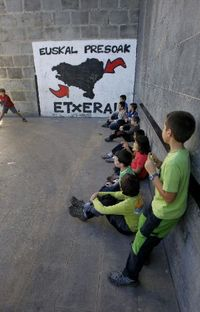
Un hombre se entrega a la policía tras matar a su mujer en Terrassa
Sun, 27 Nov 2011 12:59:00 +0100
Un hombre se ha entregado hoy a los Mossos d'Esquadra tras matar supuestamente a su mujer con un arma blanca en su domicilio de Terrassa (Barcelona), según ha informado la policía autonómica.
Angela Merkel busca un nuevo dibujo de la Unión Europea
Sun, 27 Nov 2011 07:00:00 +0100
La búsqueda de soluciones a la crisis apremia tras una semana nefasta, en la que incluso Alemania fracasó parcialmente en la venta de 6.000 millones de euros de su deuda soberana. Con el agua al cuello de todos, ayer saltaron nuevas informaciones sobre las "negociaciones secretas" entre Berlín y París, que quieren reformar con la mayor rapidez el Pacto de Estabilidad del euro.
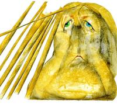
Copago por cada visita al médico no, pero sí otras fórmulas
Sun, 27 Nov 2011 07:00:00 +0100
Tasa por receta, tique moderador, sancionar al usuario que anule las visitas al especialista sin motivo... El eterno debate sobre cobrar al ciudadano por una asistencia sanitaria que ya paga a través de sus impuestos -el copago o más bien repago-, y que pasó de puntillas por la campaña electoral, vuelve a surgir ahora con fuerza. Eso sí, más creativo. Galicia, por ejemplo, ha anunciado que cobrará por el uso irresponsable de los recursos sanitarios, aunque insiste en que la idea nada tiene que ver con el copago. Cataluña habla de establecer un "tique moderador" y una tasa por receta para "poner barreras al uso excesivo". Otros, como la presidenta de la Comunidad de Madrid, Esperanza Aguirre, han abogado por revisar el porcentaje que se paga por los fármacos financiados, para que se tenga en cuenta la renta. Medidas que intentan alejarse del tradicional concepto de copago -por visita médica- pero que no dejan de ser un coste extra para el ciudadano.
El preso, la pintora y dos muertos
Sun, 27 Nov 2011 07:00:00 +0100
Mar S. subió a la habitación 204 de un hostal de Mazarrón (Murcia) junto a Jorge S. Era miércoles, 16 de noviembre. En la recepción pidieron refrescos y café. La policía encontró después restos de cocaína y güisqui en la habitación. Por la noche, Jorge bajó a la calle y, presuntamente, mató a tiros a un hombre de 32 años y a un joven de 16. La Guardia Civil le detuvo en el acto. En ese momento iba solo. Cuatro días después, los Mossos d'Esquadra arrestaron a Mar en su casa de Barcelona, acusada de intentar asesinar, junto a Jorge, a su exnovio. La pareja llevaba varios meses huida, recorriendo España en un coche robado, con la matrícula cambiada, e identidades falsas.
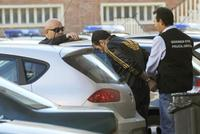
Olivas, presidente de la ruina
Sun, 27 Nov 2011 07:00:00 +0100
Apenas cien metros separan la sede social del Banco de Valencia de la delegación del Banco de España en la capital de la Comunidad Valenciana. La filial del banco emisor se construyó en 1917 y su fachada, pese a sus reminiscencias platerescas, es de una sobriedad extrema comparada con el estilo regionalista y casticista del valenciano, cuyos salones cobijan a ilustres apellidos de la burguesía local desde 1942. La vecindad de ambas instituciones nunca ha sido garantía de buenas relaciones, sino más bien todo lo contrario. La trifulca más reciente ha sido la intervención del Banco de Valencia por el de España, el pasado lunes, tras descubrirse un déficit inicial de unos ochocientos millones; pero no ha sido la primera vez que el regulador interviene en una entidad de la que siempre han presumido ilustres familias valencianas. En 1994, el Banco de España -pese a su filosofía contraria a que las cajas de ahorros entraran en el capital de los bancos- forzó a Bancaja a comprar el 24,4% del Valencia, participación que luego se elevó hasta el 39%, para cubrir los riesgos de una expansión que le llevó a participar en sectores que iban desde la industria manufacturera hasta la pesca.
La encrucijada de Alonso con Ferrari
Sun, 27 Nov 2011 20:15:00 +0100
La metamorfosis mental de Fernando Alonso es algo incuestionable después de comprobar la actitud de respeto y contención que ha mantenido con la escudería Ferrari a lo largo de toda la temporada. Frente a la evidencia de que el equipo de Maranello ha sido incapaz de ofrecerle el mejor coche de la parrilla, el doble campeón mundial español se ha mordido la lengua y ha evitado lanzar críticas tan duras y severas como las que vertió en 2007 contra McLaren, y en 2005 y 2006 contra Renault, a pesar de que la marca francesa le abrió las puertas de sus dos únicos títulos. Entonces, Alonso era un guerrillero, un hombre que decía las cosas tal como las sentía, capaz de acusar a su equipo de maltratarle o de dormirse en los laureles cuando era líder del Mundial y tenía en sus manos las armas para seguir ganando -lo hizo en Renault en varias ocasiones-. Ahora, a los 30 años, está donde quería, en Ferrari, y es un piloto que parece haber alcanzado el karma: está en el cielo de la F-1 y mantiene la creencia de que el equipo reaccionará en 2012 para permitirle de nuevo ser campeón mundial.
El artista reincidente
Sun, 27 Nov 2011 17:16:00 +0100
Dice Philippe Montanier que en las notas previas del partido habían apuntado que Casto, el portero del Betis, tiene por costumbre jugar muy adelantado. Y dice también que Iñigo Martínez, el central de la Real que le sorprendió desde la raya divisoria del medio campo, suele ensayar mucho estas jugadas en los entrenamientos. No es que Montanier quiera decir que el gol del defensa vizcaíno estuviera en la pizarra del partido, menos cuando el gol de la victoria se produjo en el período añadido del partido.
El Levante está cocido a fuego lento
Sun, 27 Nov 2011 18:05:00 +0100
El Levante no es flor de un día, sino que está cocido a fuego lento. Dispuesto a permanecer en la élite lo que le permita su imaginación, en vuelo celestial desde hace meses. Alentado ante el Sporting por los magníficos pases de Farinós, los quiebros de Barkero y las elegantes cabalgadas de Koné. Si a eso le añade la fiereza defensiva mantenida del año pasado, el equipo levantino ofrece unos números impecables: 23 goles a favor, dos más, por ejemplo, que el Valencia, y 12 en contra, uno menos que su poderoso vecino. El Sporting quiso ser protagonista y, en su audacia, cayó víctima de la mortal contra de los granota. Tan superiores estos en la segunda parte que Juan Ignacio Martínez se puso a hacer cuentas y, entre ellas, le pareció conveniente provocar la quinta tarjeta de Barkero, baja en el Camp Nou en la próxima jornada, de vuelta en el duelo frente al Sevilla.
El Getafe estrangula al Barcelona
Sun, 27 Nov 2011 00:08:00 +0100
Al Barcelona se le escapa la Liga antes de llegar al Bernabéu. Ha ido descontando puntos de mala manera en cancha ajena. Algunos, en partidos muy exigentes, como los de Mestalla y San Mamés; otros, en accidentes, como el del Camp Nou con el Sevilla. También ha penalizado en estadios aparentemente sencillos, como Anoeta y anoche el Coliséum Alfonso Pérez. Imponente el miércoles en San Siro, perdió la imbatibilidad en el feudo del Getafe y se ha quedado descolgado, a seis puntos del Madrid, cuando solo falta una jornada para visitar Chamartín. Ni siquiera disputar el martes el partido adelantado contra el Rayo le permitirá igualar al Madrid. No perdía el Barça desde el 30 de abril, en el campo de la Real Sociedad. Así que la primera derrota fue también la más cruel porque el margen de error era mínimo.
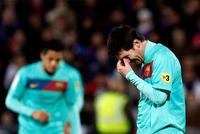
Hallado muerto Gary Speed, técnico de Gales
Sun, 27 Nov 2011 14:37:00 +0100
El seleccionador de Gales, Gary Speed, ha muerto a los 42 años, según ha comunicado la Federación de fútbol galesa a través de un escueto comunicado. "Transmitimos nuestras condolencias a la familia y pedimos a todo el mundo que respete la privacidad de sus familiares en estos momentos muy tristes", reza la nota. Según la agencia Reuters, la policía ha confirmado haber encontrado el hombre ahorcado en su casa de Huntington, en Chester (noroeste de Inglaterra) y ha afirmado que no existen "circunstancias sospechosas alrededor del fallecimiento".
El fado, patrimonio de la humanidad
Sun, 27 Nov 2011 16:15:00 +0100
La Unesco ha inscrito en la Lista Representativa de Patrimonio Cultural Inmaterial de la Humanidad el fado portugués, la música mariachi de México, el saber tradicional de los chamanes jaguares del Yuruparí de Colombia, y el peregrinaje al santuario del Señor de Qoyllurit'i de Perú.
Último viaje a Biriatou
Sun, 27 Nov 2011 07:00:00 +0100
En lo alto de un monte, frente a la verde rivera del Bidasoa, se alza la terraza desde la que Jorge Semprún contemplaba España desde Francia con el seco dolor del exilio. Un lugar aparentemente apacible pese a su condición fronteriza y pese a que en su hermoso cementerio (invocado por Unamuno en su poema Orhoitz Gutaz, Acordaos de nosotros) descansa un muerto de la histórica batalla de Galípoli o que, décadas después, la policía ultrajara una de sus tumbas tras una falsa pista que señalaba que allí estaban enterrados los restos del dirigente de ETA político-militar Pertur.
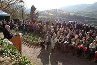
¿Mujeres vestidas, hombres desnudos?
Sun, 27 Nov 2011 07:00:00 +0100
En el artículo Ministrables sin cartera, publicado el pasado lunes, se describía la trayectoria de 11 políticos que podrían ocupar una cartera en el próximo Gobierno de Mariano Rajoy. El texto ha provocado quejas, "no por el interesantísimo contenido de los perfiles", en palabras de Germán Castañeda Elena, "sino por el perverso enfoque de género que, probablemente de forma inconsciente, han hecho tanto los redactores de esa información, como los responsables de supervisarla". La razón es que "en todos los perfiles sobre las mujeres se deja bien claro si están casadas, divorciadas, si son madres solteras y cuántos hijos tienen", detalles que no se explican de ninguno de los siete hombres retratados.
Con la que está cayendo
Sun, 27 Nov 2011 07:00:00 +0100
La alegría va a acabar siendo un sentimiento subversivo. La crisis del 29 despertó las conciencias sociales pero también inspiró un arte cinematográfico, teatral, musical que trataba de iluminar unas vidas que de haberse limitado sólo a la realidad no hubieran pasado del gris. Al poeta sueco Tomas Tranströmer, premio Nobel de Literatura de 2011, sus compatriotas practicantes de la poesía comprometida, tendencia dominante en los setenta en su país, le acusaban de crear versos escapistas, ya se sabe, paisajes invernales, misterios de la vida cotidiana, recovecos de su mundo interior, de los sueños o la música. Antes de continuar, juro ante Dios y ante mis lectores que no tengo nada en contra de la poesía o de la novela social, tampoco de los cantautores, del teatro y del cine comprometidos o de las performances de Marina Abramovich que denuncian la soledad del ser humano, la incomunicación, la alienación del individuo, el sexismo, el racismo, vamos, que no se dejan un atisbo de injusticia sin denunciar. Pero estoy radicalmente en contra de esa tendencia asfixiante a practicar un compromiso malhumorado que niega la alegría. La alegría se está convirtiendo en algo subversivo. Y a eso estamos contribuyendo aquellos que mostramos nuestro trabajo públicamente, porque, temerosos de que si confesamos cierto entusiasmo de vivir se nos tache de poco solidarios con la situación que, desde luego, estamos viviendo, nos entregamos a una seriedad continua, un poco impostada, y escribimos y hablamos, hablamos y escribimos sin respiro alguno sobre el nubarrón que ha ensombrecido nuestras vidas y que no hay viento que se lo lleve. El otro día, leo a un escritor que cuenta la manera en que se está produciendo la transición del otoño al invierno, al caer las hojas desaparecen los colores, decía, y del color se pasa al blanco y negro, del óleo al dibujo a carboncillo. En fin, algo que, en principio, no debiera molestar a nadie. Pues bien, más de un lector entró a considerar si era lógico hablar de colores y árboles desnudos con la que está cayendo. ¡Con la que está cayendo!, la frase de la década. Inevitablemente, el severo juicio de unos pocos que pueden tachar de frívolo o insensible al cronista que un día se permite un descanso y decide no hablar del sistema financiero hace mella en cualquier alma bienintencionada; el resultado es que en los medios de comunicación estamos dejando de frecuentar el término medio: vamos de la columna catastrofista (lo cual es fácil con la que está cayendo) a la crónica petarda y malévola. La consecuencia es que ese territorio del disfrute legítimo de la vida se nos está quedando hecho un erial. Y hay una ligera falsedad en ese proclamar a los cuatro vientos una preocupación constante por los males del mundo. De algo así escribía el otro día Javier Marías en su columna. Si tenemos sensibilidad todo nos concierne, está claro, pero no creo que ni el intelectual más comprometido se sienta concernido las veinticuatro horas del día. Si así fuera, su problema sería la consecuencia, sin duda, de un desequilibrio químico, y con prozac o similares aliviaría su propensión al derrotismo. A no ser que seas "rico por tu casa" es imposible ahora mismo ser español y no tener algún hermano en paro, unos hijos mileuristas o aspirantes a mileuristas, una madre anciana a la que hay que completar la pensión y a la que no acaba de llegarle la ayuda de la famosa ley de dependencia, un amigo angustiado por la inseguridad de colaboraciones precarias o algún familiar que harto de buscar dentro decide largarse, volver a hacer las Américas, por ejemplo. Pero no significa que la vida no presente momentos que celebrar. Hay cierta incongruencia entre nuestra actitud de catastrofismo perenne y la capacidad que uno observa en la calle de disfrute de la gente. Es como cuando un fotógrafo va a África y sólo muestra la imagen de las moscas revoloteando los lacrimales del niño. A pesar del nubarrón, no es tristeza sin esperanza lo que veo a mi alrededor, ni en Madrid, ni en el sur de España, ni en este Nueva York en el que el jueves se comieron algunos de los cuarenta y cinco millones de pavos sacrificados para celebrar el día de Acción de Gracias. Nuestro imbatible antiamericanismo nos lleva a considerar que expresar gratitud entorno a una mesa es algo peliculero. Sin embargo, esta fiesta no religiosa pero sí espiritual tiene algo reconfortante. Todos aquellos españoles que pasaron por aquí y se acostumbraron a celebrarla continúan la tradición cuando abandonan el país. Dar gracias. Esta misma semana el suplemento de ciencia de The New York Times hablaba de cómo sentir gratitud ensancha el ánimo, o el alma, como antes se decía. Sentirse agradecido, aclaraban, que no es lo mismo que sentirse en deuda. Y puede ser entorno a un pavo o a cualquiera de esas cenas esmeradas que prepararemos en las casas cuando el año se cierre, a pesar del nubarrón o de que alguna desgracia nos haya caído este año sobre los hombros. Y dado que la alegría se está convirtiendo en algo subversivo me comprometo a practicarla y difundirla, a riesgo de ser considerada superficial por aquellos que han adoptado la frasecilla "con la que está cayendo" para amargarle la vida al prójimo.
La crítica, contra las cuerdas
Sat, 26 Nov 2011 07:00:00 +0100
Al aura polémica y de crisis casi connaturales de la crítica literaria se suma la pluralidad de espacios en la Red y tecnologías emergentes sobre cómo ejercerla y divulgarla. El juego es el mismo, las reglas apenas han cambiado, pero los tableros son otros; y un jugador pugna por ganar protagonismo: el lector anónimo y el personaje o famoso de turno.
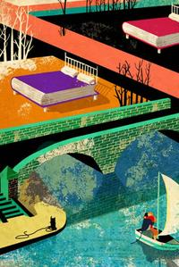